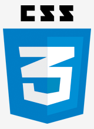
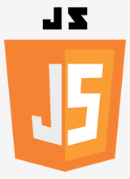

<!DOCTYPE html>
<html>
<head>
  <meta charset="utf-8" />
  <meta http-equiv="X-UA-Compatible" content="IE=edge">
  <title>零基础前端学习</title>
  <meta name="viewport" content="width=device-width, initial-scale=1">
  <link rel="stylesheet" type="text/css" href="http://at.alicdn.com/t/font_579485_flqdrkc4q6djwcdi.css">
  <link rel="stylesheet" type="text/css" href="main.css">
  <script src="main.js"></script>
</head>
<body>
  <div class="header">
    <div class="intro">
      
    </div>
    <div class="elements">
      <h2>网页如建筑，由三种语言构成</h2>
      <div class="element">
        
        <p>HTML 描述着网页的结构，好比楼房的钢骨</p>
      </div>
      <div class="element">
        
        <p>CSS 是网页的软硬装，惊艳动人全掌控</p>
      </div>
      <div class="element">
        
        <p>Javascript 是网页的智能助理，如何舒适全搞定</p>
      </div>
    </div>
  </div>
  <div class="faq">
    <h2>学前疑问</h2>
    <ul class="list">
      <li>
        <h3>前端是什么？</h3>
        <p>
          前端包含但不止于：PC 网站、手机网站、手机 App、微信公众号、游戏、VR 内容等；心若大，前端岂止大。
        </p>
      </li>
      <li>
        <h3>前端编程最容易学习？</h3>
        <p>
          HTML 易懂，CSS 次之，Javascript 深入，循序渐进学习；
          前端为可视化编程，编写代码即可见效果。
        </p>
      </li>
      <li>
        <h3>课程适合人群？</h3>
        <p>
          想进入 IT 编程工作的，或许您还在迷茫中的，或许此课程能帮到您；
          已在 IT 中，想学前端技术或尝试独立开发，或许此课程能让您熟悉。
        </p>
      </li>
      <li>
        <h3>我英语不好，能学会吗？</h3>
        <p>
          英语好固然能帮助学习，但不好也不能代表就学不了。
          编程大都使用的是编程专业英语，即使英语再好的人都是要把英语学习一番。
          词汇量不大，反复进行代码编写，自然会将这些英语记牢。
        </p>
      </li>
      <li>
        <h3>课程多久学完？</h3>
        <p>
          大概三个月左右。
          需要您上课专心学习，课下至少三倍时间的勤加练习；
          编程路上是需要不断学习前行的，本课程目的是让你踏足此行，掌握学习方法。
        </p>
      </li>
      <li>
        <h3>学习中途落课了怎么办？</h3>
        <p>中途耽误几天的话可以通过看视频同步完成老师的作业弥补进度，不会的可以随时问老师。</p>
      </li>
      <li>
        <h3>是否可以免费重修呢？</h3>
        <p>因学习中途落课或者学习效果不扎实等原因可以向教务老师申请重修或降级，本期学不会下期免费再学，直到学会为止！</p>
      </li>
      <li>
        <h3>课程优势是什么？</h3>
        <p>
          精心指导您打牢前端基础，掌握学习 IT 技能的方法；受予鱼，愿授以渔。
          模拟工作岗位，开展实战项目，课下作业督促指导；
          问题群内解答，针对个人情况单独指导; 
        </p>
      </li>
      <li>
        <h3>包推荐工作吗？</h3>
        <p>
          原则：不推荐工作，不承诺待遇；
          始终相信好的工作是自己努力得来的。
          我会给你底气，我会给你自信。
        </p>
      </li>
    </ul>
  </div>
  <div class="course">
    <h2>课程内容</h2>
    <ul class="list">
      <li>
        <i class="iconfont icon-reshen"></i>
        <h3>课前预热</h3>
        <p>个人资料介绍，IT 行业简析，前端岗位了解，网页示例预热</p>
      </li>
      <li>
        <i class="iconfont icon-html"></i>
        <h3>HTML</h3>
        <p>HTML 标签学习，学会如何查询手册</p>
      </li>
      <li>
        <i class="iconfont icon-css"></i>
        <h3>CSS</h3>
        <p>CSS 样式学习，各种常用布局，示例解析学习</p>
      </li>
      <li>
        <i class="iconfont icon-js"></i>
        <h3>Javascript</h3>
        <p>学会编程思想，掌握一门真正的编程语言；做一款小游戏。</p>
      </li>
      <li>
        <i class="iconfont icon-dom"></i>
        <h3>Dom 对象</h3>
        <p>DOM 对象解析，结合 Javascript 语言完成实例</p>
      </li>
      <li>
        <i class="iconfont icon-jquery"></i>
        <h3>jQuery 与 JS 进阶</h3>
        <p>jQuery 为前端必学的库，包含了 Dom 操作、 Ajax、异步等众多知识点</p>
      </li>
      <li>
        <i class="iconfont icon-bootstrap"></i>
        <h3>Bootstrap</h3>
        <p>框架如其名，通过它的指引你会很容易做出一个漂亮的网站</p>
      </li>
      <li>
        <i class="iconfont icon-gongju"></i>
        <h3>前端技巧与工具</h3>
        <p>涉及与前端相关的更多技术知识，主要有 PS、Git、Node、Webpack、VSCode </p>
      </li>
      <li>
        <i class="iconfont icon-mobile"></i>
        <h3>移动项目实战</h3>
        <p>让你明白移动网站与 PC 网站的区别，一探微信公众号网站的究竟</p>
      </li> 
      <li>
        <i class="iconfont icon-pc"></i>
        <h3>PC 项目实战</h3>
        <p>运用所学知识，团队协作完成一个真实的项目</p>
      </li>
      <li>
        <i class="iconfont icon-work"></i>
        <h3>工作相关</h3>
        <p>面试题讲解，如何应对人事的面试追问，offer 的挑选经验</p>
      </li>
      <li>
        <i class="iconfont icon-xuexi"></i>
        <h3>扩展学习</h3>
        <p>
          学习方法论，如何去上手前端最流行框架 Vue、React、React Native、小程序等；
          我们会带你了解服务端技术、数据库技术，让你在工作中能沟通无碍
        </p>
      </li>
    </ul>
  </div>
  <div class="footer">
    <h2>加入我们吧</h2>
    <div class="profile">
      <h3>传授人资料</h3>
      <p>
        陈海峰，湖南人，Java 码农出身，当年还未分前端此岗位，前后端都由单人完成（现在称全栈工程师）。
        大概工作五六年后，前端的用户体验不断升温，因此 web 开发、前端开发的职位才诞生；
        为了顺应大自然规律，毅然决然投身此岗位，至此已在前端岗位专职三年有余；
        担任着某某公司前端架构及管理岗位（其实依然还是码畜、码农、程序猿）。
      </p>
    </div>
    <div class="contact">
      
      
    </div>
  </div>
</body>
</html>